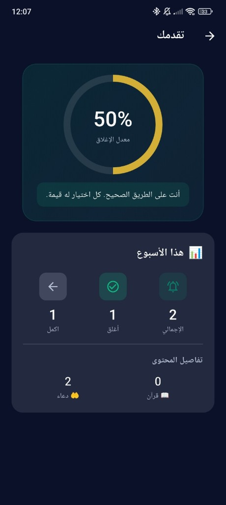
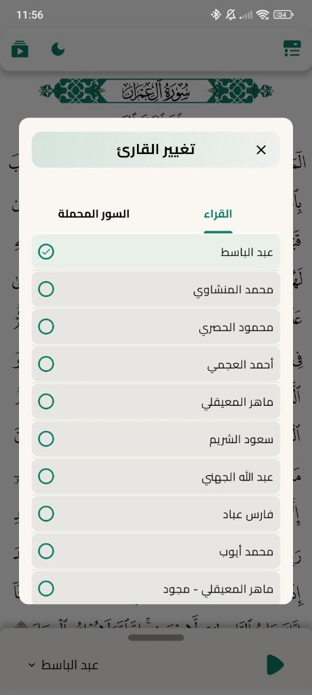
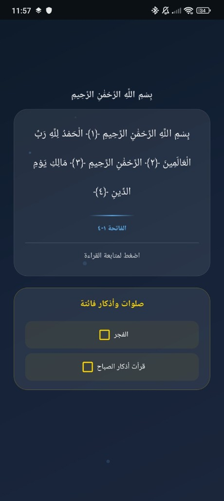
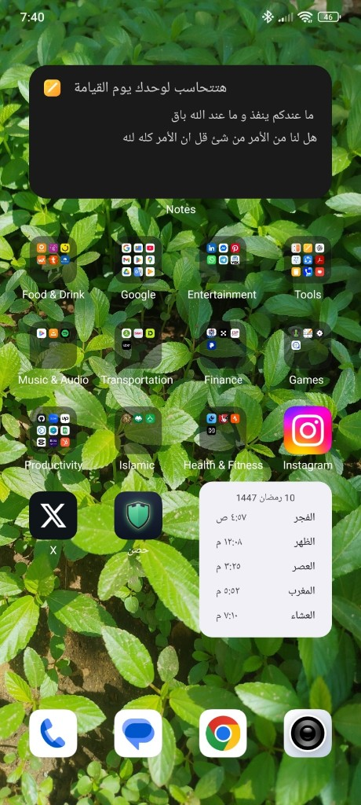
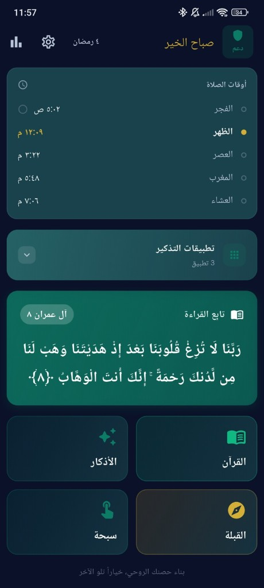
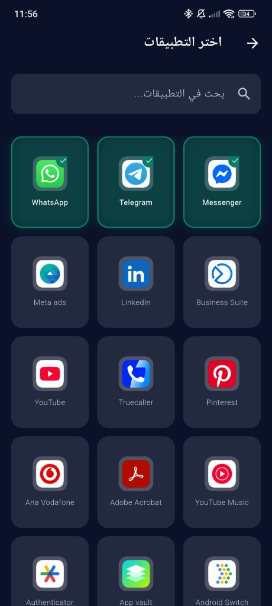

حصنك الروحي
Turn every screen-unlock into a moment of remembrance. Quran, Adhkar, Prayer Times, and Qibla — beautifully united.





Every time you open a distracting app — social media, games, anything you choose — Hisn gently appears with a verse from the Quran or an authentic remembrance. One mindful breath before you scroll.
From the Fajr alarm to the last Adhkar before sleep — Hisn walks with you through every part of your day.
Browse by Surah, Page, Juz, or Hizb. Beautiful Arabic typography with audio recitation (Tilawah) — read and listen, anywhere, offline.
Offline · AudioMorning, Evening, After Prayer, and Before Sleep remembrances from Hisn ul-Muslim — with Arabic text, transliteration, and count tracking.
Hisn ul-MuslimPrecise prayer times calculated from your GPS location. Adhan notifications with beautiful sounds, and a home-screen widget so you never miss a prayer.
GPS · Widget · AdhanReal-time compass with a precise Kaaba direction indicator. Works with built-in calibration guidance for perfect accuracy anywhere in the world.
Real-time · CalibratedTrack how often you connect with Quran and Adhkar. Visual stats help you see your consistency and celebrate streaks of remembrance.
Streaks · InsightsA smooth, haptic digital tasbeeh counter for your daily Dhikr. Count your Subhanallah, Alhamdulillah, and Allahu Akbar effortlessly.
Haptic FeedbackSave your favourite Ayat and jump back to them instantly. Your personal collection of verses that resonate with you most.
Personal LibraryStay connected to the Islamic lunar calendar alongside the Gregorian date, so you never miss important Islamic dates and occasions.
Dual CalendarScheduled content notifications with Quranic verses and Adhkar delivered throughout your day — gentle reminders, not noise.
Scheduled · GentleWhen you open a distracting app, Hisn softly appears with a Quranic verse or Dhikr. A breath of the divine before the scroll.
You're never locked out — just gently reminded of what matters more.
All 114 Surahs with stunning Arabic typography. Navigate by Surah, Page, Juz, or Hizb. Listen to beautiful audio recitation while you read.
Your spiritual library, always at hand — even offline.
See how your spiritual habits grow over time. Visual stats on your Quran reading and Adhkar count help you stay motivated and consistent.
Small, steady steps — Hisn celebrates every one of them.

Choose exactly which apps on your phone trigger the spiritual reminder overlay. Social media, games, browsers — your choice, your rules.
Hisn respects your autonomy while helping you build better habits.
A beautiful, glanceable widget showing today's prayer times — always visible, always accurate, based on your real location.
Never miss a prayer again, even without opening the app.
Hisn is designed to be effortless. No complex setup, no overwhelming options — just a few steps to a more mindful day.
Install Hisn from the App Store or Google Play and open it for a friendly 5-step onboarding walkthrough.
Allow location for prayer times and Qibla. Optionally enable app monitoring for the overlay feature — all explained clearly.
Select which apps you'd like to mindfully pause before opening. Hisn will gently appear with a reminder when you try to open them.
Go about your day. Hisn quietly works in the background, weaving moments of remembrance into your screen time naturally.
"Finally an app that doesn't lecture me — it just quietly plants a seed of remembrance every time I reach for my phone mindlessly."
"The prayer widget alone is worth it. I glance at my home screen and I always know how long until the next Salah. It changed how I plan my day."
"I set it to interrupt Instagram. After a week I noticed I was opening it less — not because I was blocked, but because the Ayah made me think twice."
Free to download. No subscriptions. Just a sincere tool built for Muslims who want to do better — بإذن الله.